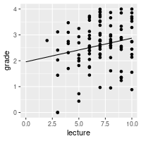
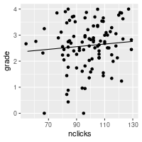

Multiple Regression
Statistical Models Dale Barr
Psychology, University of Glasgow
Created: 2020-10-11 Sun 16:58
Moving beyond simple regression
- introduction
- estimation and interpretation
- using multiple regression
- partial variable plots
- standardized coefficients
- model comparison
- categorical predictors
- dummy coding schemes
- one factor ANOVA using regression
Multiple regression
General model for single-level data with \(m\) predictors:
\(Y_i = \beta_0 + \beta_1 X_{1i} + \beta_2 X_{2i} + \ldots + \beta_m X_{mi} + e_i \)
individual \(X\)s can be any combination of continuous and categorical predictors (and their interactions)
Each \(\beta_j\) is the partial effect of \(X_{j}\) holding all other \(X\)s constant
(NB: single-level data is rare in psychology)
Example
Are lecture attendance and engagement with online materials associated with higher grades in statistics?
Does this relationship hold after controlling for overall GPA?
Data import
grades <- read_csv("data/grades.csv",
col_types = "ddii")
grades
# A tibble: 100 x 4 grade GPA lecture nclicks <dbl> <dbl> <int> <int> 1 2.40 1.13 6 88 2 3.67 0.971 6 96 3 2.85 3.34 6 123 4 1.36 2.76 9 99 5 2.31 1.02 4 66 6 2.58 0.841 8 99 7 2.69 4 5 86 8 3.05 2.29 7 118 9 3.21 3.39 9 98 10 2.24 3.27 10 115 # … with 90 more rows
Correlations
library("corrr")
grades %>%
correlate() %>%
shave() %>%
fashion()
Correlation method: 'pearson' Missing treated using: 'pairwise.complete.obs' rowname grade GPA lecture nclicks 1 grade 2 GPA .25 3 lecture .24 .44 4 nclicks .16 .30 .36
Visualization
grades %>%
pairs()

Estimation and interpretation
\(Y_i = \beta_0 + \beta_1 X_{1i} + \beta_2 X_{2i} + \ldots + \beta_m X_{mi} + e_i\)
lm(Y ~ X1 + X2 + ... + Xm, data)
my_model <- lm(grade ~ lecture + nclicks, grades)
summary(my_model)
Call:
lm(formula = grade ~ lecture + nclicks, data = grades)
Residuals:
Min 1Q Median 3Q Max
-2.21653 -0.40603 0.02267 0.60720 1.38558
Coefficients:
Estimate Std. Error t value Pr(>|t|)
(Intercept) 1.462037 0.571124 2.560 0.0120 *
lecture 0.091501 0.045766 1.999 0.0484 *
nclicks 0.005052 0.006051 0.835 0.4058
---
codes: 0 ‘***’ 0.001 ‘**’ 0.01 ‘*’ 0.05 ‘.’ 0.1 ‘ ’ 1
Residual standard error: 0.8692 on 97 degrees of freedom
Multiple R-squared: 0.06543, Adjusted R-squared: 0.04616
F-statistic: 3.395 on 2 and 97 DF, p-value: 0.03756
Using multiple regression
Visualizing partial effects
dmean <- grades %>%
pull(nclicks) %>% mean()
new1 <- crossing(lecture = 0:10,
nclicks = dmean)
new2 <- new1 %>%
mutate(grade = predict(my_model,
new1))
ggplot(grades, aes(lecture, grade)) +
geom_point() +
geom_line(data = new2)

lmean <- grades %>%
pull(lecture) %>% mean()
new3 <- crossing(nclicks = 55:130,
lecture = lmean)
new4 <- new3 %>%
mutate(grade = predict(my_model,
new3))
ggplot(grades, aes(nclicks, grade)) +
geom_point() +
geom_line(data = new4)

See ?predict.lm(), ?tidyr::crossing()
Standardized coefficients
Which predictor matters more?
grades2 <- grades %>%
mutate(lecture_c = (lecture - mean(lecture)) / sd(lecture),
nclicks_c = (nclicks - mean(nclicks)) / sd(nclicks))
summary(lm(grade ~ lecture_c + nclicks_c, grades2))
Call:
lm(formula = grade ~ lecture_c + nclicks_c, data = grades2)
Residuals:
Min 1Q Median 3Q Max
-2.21653 -0.40603 0.02267 0.60720 1.38558
Coefficients:
Estimate Std. Error t value Pr(>|t|)
(Intercept) 2.59839 0.08692 29.895 <2e-16 ***
lecture_c 0.18734 0.09370 1.999 0.0484 *
nclicks_c 0.07823 0.09370 0.835 0.4058
---
codes: 0 ‘***’ 0.001 ‘**’ 0.01 ‘*’ 0.05 ‘.’ 0.1 ‘ ’ 1
Residual standard error: 0.8692 on 97 degrees of freedom
Multiple R-squared: 0.06543, Adjusted R-squared: 0.04616
F-statistic: 3.395 on 2 and 97 DF, p-value: 0.03756
See ?base::scale()
Standardized vs non-standardized
standardized
Coefficients: Estimate Std. Error t value Pr(>|t|) (Intercept) 2.59839 0.08692 29.895 <2e-16 *** lecture_c 0.18734 0.09370 1.999 0.0484 * nclicks_c 0.07823 0.09370 0.835 0.4058not standardized
Coefficients: Estimate Std. Error t value Pr(>|t|) (Intercept) 1.462037 0.571124 2.560 0.0120 * lecture 0.091501 0.045766 1.999 0.0484 * nclicks 0.005052 0.006051 0.835 0.4058
Model comparison
Is engagement (as measured by lecture attendance and downloads) positively associated with final course grade above and beyond student ability (as measured by GPA)?
Strategy
Create a “base” model with all control vars and compare to a “bigger” model with all control and focal vars
base_model <- lm(grade ~ GPA, grades)
big_model <- lm(grade ~ GPA + lecture + nclicks, grades)
anova(base_model, big_model)
Analysis of Variance Table Model 1: grade ~ GPA Model 2: grade ~ GPA + lecture + nclicks Res.Df RSS Df Sum of Sq F Pr(>F) 1 98 73.528 2 96 71.578 2 1.9499 1.3076 0.2752
\(F(2, 96) = 1.31, p = .275\)
If \(p < \alpha\), bigger model is better.
Categorical predictors
Dummy coding binary vars
Arbitrarily assign one of the two levels to 0; assign the other to 1.
NB: sign of the variable depends on the coding!
See ?dplyr::if_else()
Factors with \(k > 2\)
Arbitrarily choose one level as “baseline” level.
- \(k = 3\)
A2v1 |
A3v1 |
|
|---|---|---|
| \(A_1\) | 0 | 0 |
| \(A_2\) | 1 | 0 |
| \(A_3\) | 0 | 1 |
- \(k = 4\)
A2v1 |
A3v1 |
A4v1 |
|
|---|---|---|---|
| \(A_1\) | 0 | 0 | 0 |
| \(A_2\) | 1 | 0 | 0 |
| \(A_3\) | 0 | 1 | 0 |
| \(A_4\) | 0 | 0 | 1 |
One factor ANOVA
\(Y_{ij} = \mu + A_{i} + S(A)_{ij}\)
\(Y_i = \beta_0 + \beta_1 X_{1i} + \beta_2 X_{2i} + e_i\)